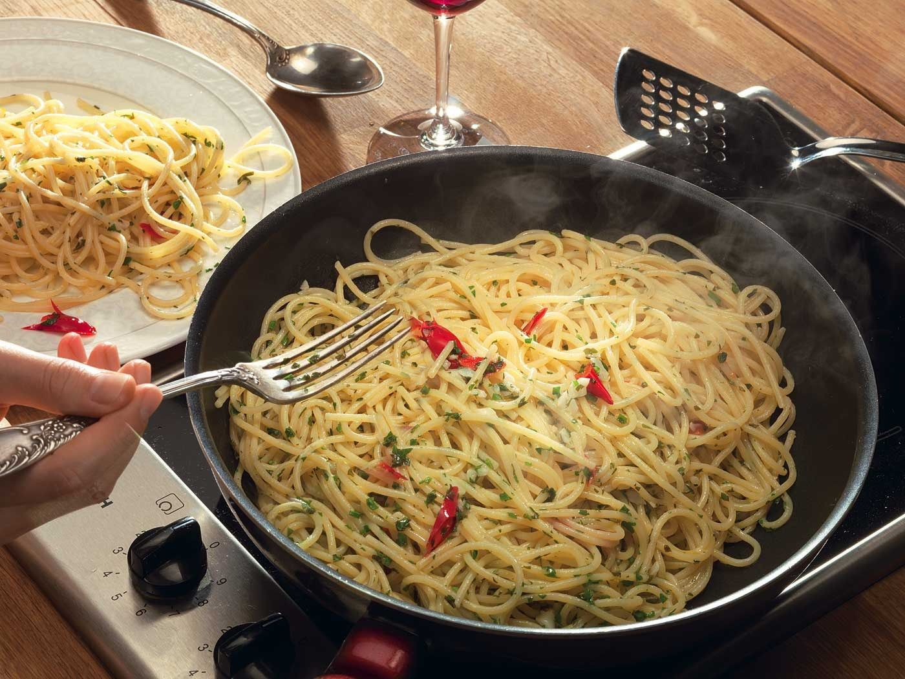
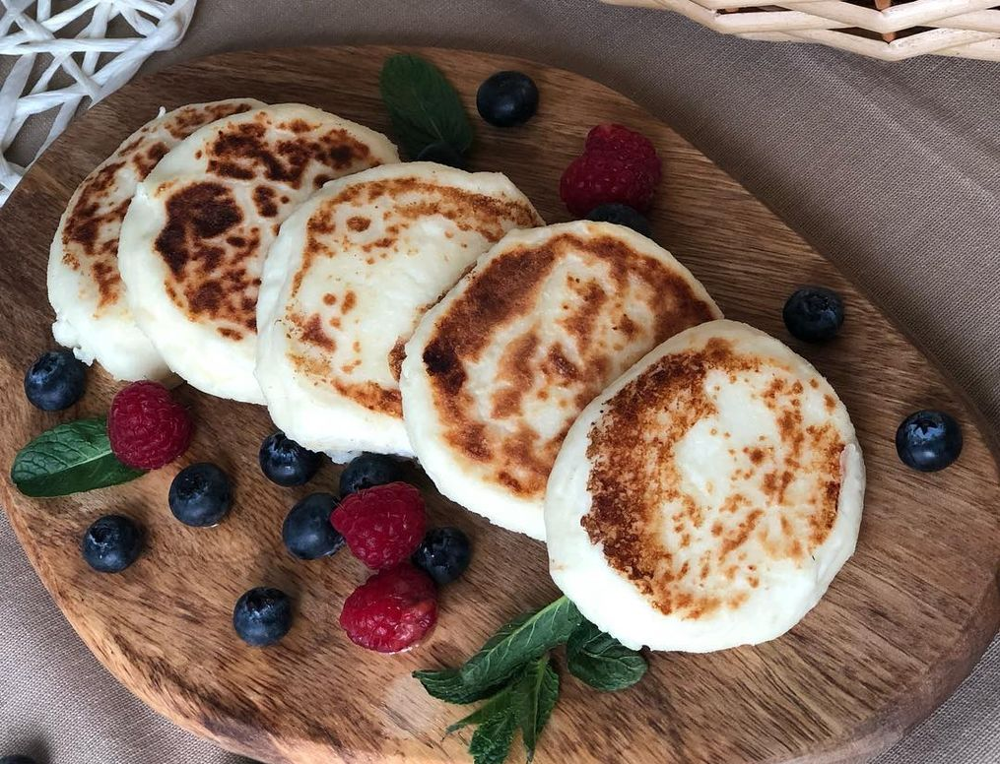

Одним из моих любимых блюд является спагетти.
В средневековой Италии практиковали своего рода раздельное питание: феодалы ели мясо, а крестьянам приходилось изобретать блюда из того, что было под рукой. Паста алио-олио (спагетти с чесноком и маслом) — наследие того времени. Замечательна она тем, что из минимума компонентов получается ароматное и насыщенное вкусами блюдо, а приготовить его совсем несложно.
Вы можете посмотреть рецепт этого блюда, нажав на смайлик
:)

Также я очень люблю сырники из творога.
Главный секрет идеальных сырников — а точнее творожников, — тесто должно получиться эластичным. Если все сделать правильно, получатся нежные однородные кругляшки под плотной румяной корочкой. Сырники можно запекать в духовке или готовить на пару. В рецепте не исключаются эксперименты с начинкой — сухофрукты, орехи, свежие фрукты и даже картофель лишними не будут.
Вы можете посмотреть рецепт этого блюда, нажав на смайлик
:)
Обожаю вареную сгущенку. А еще очень люблю блины. А когда это все вместе.....это просто объедение!!!
Тонкие блины на молоке — это английский вариант традиционных пышных русских блинов, выпеченных на дрожжах. В Европе блинчики имеют вид тонких, почти прозрачных салфеток. Во Франции их называют «крепы» и подают с сотней разнообразных начинок. Никаких особых уловок в приготовлении нет: чем более жидкое тесто, тем тоньше получается блинчики.
Вы можете посмотреть рецепт этого блюда, нажав на смайлик
:)